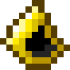
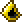
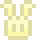

JoJo's Mod is a very minor content mod for Terraria, which adds a couple of items into the game. Many of these items are references to other games or shows that I thought would be a bit of fun to add. Most of the sprites used in this mod were drawn by me, with the exception of sprites for Sayori, Winston, and the Shrek CD, which are just PNGs I ripped off the internet (but they look funny so it's fine).
View mod on: Github | Steam Workshop
Little Rain Hood
"Little lost things sometimes find their way home."


- Rarity: Yellow
- Type: Helmet, vanity
-
Dropped By:
Raincoat Zombie,
5% drop chance

The Little Rain Hood is a reference to Six's raincoat from the game Little Nightmares. The colors used for the sprite match with the rain armor which is already in the game. Its tooltip matches the description for the achievement "The Lair" from Little Nightmares.
The Little Lighter is a reference to the lighter from Little Nightmares. It provides the same light as a torch when held. Placing this item does not consume it, and instead places a Little Lantern. These lanterns can be placed infinitely, however, they are only able to be placed on solid tiles. Its tooltip matches the description for the "Light Up Your Life" achievement from Little Nightmares.
The Scissor Blade is a reference to the scissor blade from the anime
Kill la Kill.
Its crafting recipe includes the Stylish Scissors, which also reference Kill la Kill, as their name within Terraria's source code is StylistKilLaKillScissorsIWish. The Scissor Blade ignores 50 points of enemy defense. Its high armor penetration and base damage stats are meant to place it on par with the
Terra Blade,
since the Scissor Blade lacks a projectile, and both weapons can be obtained at the same time. The tooltip references episode 4 of Kill La Kill:
"Dawn of a Miserable Morning", where
Mako
follows a trail of Swiss cheese into a trap. Mako is my favorite character :)
The Strange Poem is a reference to Sayori's poem from
Doki Doki Literature Club!.
When used, the player throws a small chibi of the character Sayori, which bounces off surfaces and pierces enemies. It bounces three times and penetrates up to two targets. Each time it bounces, the FemaleHit sound effect is played. Its AI is similar to that of the
Throwing Knife,
as the projectile initially flies straight in the direction thrown, then begins spinning and falls to the ground. However, the Throwing Knife does not bounce off surfaces.
The Cinematic Masterpiece is a reference to the movie Shrek, which should be obvious considering the sprite is a low-res PNG of Shrek on a DVD. Its AI is similar to the Thorn Chakram, at least in terms of its motion. The disc flies through the air and will bounce off of tiles for roughly half a second before turning around and returning to the player. Upon striking an enemy, the disc will immediately begin returning to the player. To make up for its relatively slow use time due to only one being throwable at a time, the damage dealt by the disc increases the longer it flies in the air. To be precise, it increases by 3% each frame when it is initially thrown, and 1% when it is returning to the player. The final calculated damage value is cast to an integer, since damage values in Terraria must be an integer.
The Symphony Hat is a reference to
Jakuzure's
hat from Kill la Kill, with its tooltip being a quote from episode 10:
"I Want to Know More About You".
The sprite for this helmet is too large to fit on the spritesheet which is usually used for helmets, so I had to create a PlayerDrawLayer to display it properly. This made me go insane :) There are so few resources on how to do this that I decided to create a guide on creating tall helmets with tModLoader.